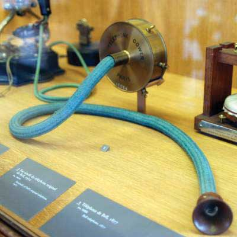

Communication can be categorized into three basic types: (1) verbal communication, in which you listen to a person to understand their meaning; (2) written communication, in which you read their meaning; and (3) nonverbal communication, in which you observe a person and infer meaning. Each has its own advantages, disadvantages, and even pitfalls.
Verbal communications in business take place over the phone or in person. The medium of the Message is oral. Let’s return to our printer cartridge example. This time, the Message is being conveyed from the Sender (the Manager) to the Receiver (an employee named Bill) by telephone. We’ve already seen how the Manager’s request to Bill (“We need to buy more printer toner cartridges”) can go awry. Now let’s look at how the same Message can travel successfully from Sender to Receiver.
Manager (speaking on the phone): “Good morning, Bill!”
(By using the employee’s name, the manager is establishing a clear, personal link to the Receiver.)
Manager: “Your division’s numbers are looking great.”
(The Manager’s recognition of Bill’s role in a winning team further personalizes and emotionalizes the conversation.)
Manager: “Our next step is to order more printer toner cartridges. Could you place an order for 1,000 printer toner cartridges with Jones Computer Supplies? Our budget for this purchase is $30,000, and the cartridges need to be here by Wednesday afternoon.”
(The Manager breaks down the task into several steps. Each step consists of a specific task, time frame, quantity, or goal.)
Bill: “Sure thing! I’ll call Jones Computer Supplies and order 1,000 more printer toner cartridges, not exceeding a total of $30,000, to be here by Wednesday afternoon.”
(Bill, who is good at active listening, repeats what he has heard. This is the Feedback portion of the communication, and verbal communication has the advantage of offering opportunities for immediate feedback. Feedback helps Bill to recognize any confusion he may have had hearing the manager’s Message. Feedback also helps the manager to tell whether she has communicated the Message correctly.)
Storytelling has been shown to be an effective form of verbal communication; it serves an important organizational function by helping to construct common meanings for individuals within the organization. Stories can help clarify key values and help demonstrate how things are done within an organization, and story frequency, strength, and tone are related to higher organizational commitment.McCarthy, J. F. (2008). Short stories at work: Storytelling as an indicator of organizational commitment. Group & Organization Management, 33, 163–193. The quality of the stories entrepreneurs tell is related to their ability to secure capital for their firms.Martens, M. L., Jennings, J. E., & Devereaux, J. P. (2007). Do the stories they tell get them the money they need? The role of entrepreneurial narratives in resource acquisition. Academy of Management Journal, 50, 1107–1132. Stories can serve to reinforce and perpetuate an organization’s culture, part of the organizing P-O-L-C function.
While the process may be the same, high-stakes communications require more planning, reflection, and skill than normal day-to-day interactions at work. Examples of high-stakes communication events include asking for a raise or presenting a business plan to a venture capitalist. In addition to these events, there are also many times in our professional lives when we have crucial conversationsDiscussions where the stakes are high, opinions vary, and emotions run strong.—discussions where not only the stakes are high but also where opinions vary and emotions run strong.Patterson, K., Grenny, J., McMillan, R., & Switzler, A. (2002). Crucial conversations: Tools for talking when stakes are high. New York: McGraw-Hill. One of the most consistent recommendations from communications experts is to work toward using “and” instead of “but” as you communicate under these circumstances. In addition, be aware of your communication style and practice flexibility; it is under stressful situations that communication styles can become the most rigid.
In contrast to verbal communications, written business communications are printed messages. Examples of written communications include memos, proposals, e-mails, letters, training manuals, and operating policies. They may be printed on paper, handwritten, or appear on the screen. Normally, a verbal communication takes place in real time. Written communication, by contrast, can be constructed over a longer period of time. Written communication is often asynchronous (occurring at different times). That is, the Sender can write a Message that the Receiver can read at any time, unlike a conversation that is carried on in real time. A written communication can also be read by many people (such as all employees in a department or all customers). It’s a “one-to-many” communication, as opposed to a one-to-one verbal conversation. There are exceptions, of course: a voicemail is an oral Message that is asynchronous. Conference calls and speeches are oral one-to-many communications, and e-mails may have only one recipient or many.
Figure 12.14
Communication mediums have come a long way since Alexander Graham Bell’s original telephone.
Most jobs involve some degree of writing. According to the National Commission on Writing, 67% of salaried employees in large American companies and professional state employees have some writing responsibility. Half of responding companies reported that they take writing into consideration when hiring professional employees, and 91% always take writing into account when hiring (for any position, not just professional-level ones).Flink, H. (2007, March). Tell it like it is: Essential communication skills for engineers. Industrial Engineer, 39, 44–49.
Luckily, it is possible to learn to write clearly. Here are some tips on writing well. Thomas Jefferson summed up the rules of writing well with this idea “Don’t use two words when one will do.” One of the oldest myths in business is that writing more will make us sound more important; in fact, the opposite is true. Leaders who can communicate simply and clearly project a stronger image than those who write a lot but say nothing.
What you say is a vital part of any communication. But what you don’t say can be even more important. Research also shows that 55% of in-person communication comes from nonverbal cues like facial expressions, body stance, and tone of voice. According to one study, only 7% of a Receiver’s comprehension of a Message is based on the Sender’s actual words; 38% is based on paralanguage (the tone, pace, and volume of speech), and 55% is based on nonverbal cues (body language).Mehrabian, A. (1981). Silent messages. New York: Wadsworth.
Research shows that nonverbal cues can also affect whether you get a job offer. Judges examining videotapes of actual applicants were able to assess the social skills of job candidates with the sound turned off. They watched the rate of gesturing, time spent talking, and formality of dress to determine which candidates would be the most successful socially on the job.Gifford, R., Ng, C. F., & Wilkinson, M. (1985). Nonverbal cues in the employment interview: Links between applicant qualities and interviewer judgments. Journal of Applied Psychology, 70, 729–736. For this reason, it is important to consider how we appear in business as well as what we say. The muscles of our faces convey our emotions. We can send a silent message without saying a word. A change in facial expression can change our emotional state. Before an interview, for example, if we focus on feeling confident, our face will convey that confidence to an interviewer. Adopting a smile (even if we’re feeling stressed) can reduce the body’s stress levels.
To be effective communicators, we need to align our body language, appearance, and tone with the words we’re trying to convey. Research shows that when individuals are lying, they are more likely to blink more frequently, shift their weight, and shrug.Siegman, A. W. (1985). Multichannel integrations of nonverbal behavior. Hillsdale, NJ: Lawrence Erlbaum.
To learn more about facial language from facial recognition expert Patrician McCarthy as she speaks with Senior Editor Suzanne Woolley at Business Week, view the online interview at http://feedroom.businessweek.com/index.jsp?fr_chl=1e2ee1e43e4a5402a862f79a7941fa625f5b0744.
Another element of nonverbal communication is tone. A different tone can change the perceived meaning of a message. Table 12.2 "Don’t Use That Tone with Me!" demonstrates how clearly this can be true, whether in verbal or written communication. If we simply read these words without the added emphasis, we would be left to wonder, but the emphasis shows us how the tone conveys a great deal of information. Now you can see how changing one’s tone of voice or writing can incite or defuse a misunderstanding.
Table 12.2 Don’t Use That Tone with Me!
| Placement of the emphasis | What it means |
|---|---|
| I did not tell John you were late. | Someone else told John you were late. |
| I did not tell John you were late. | This did not happen. |
| I did not tell John you were late. | I may have implied it. |
| I did not tell John you were late. | But maybe I told Sharon and José. |
| I did not tell John you were late. | I was talking about someone else. |
| I did not tell John you were late. | I told him you still are late. |
| I did not tell John you were late. | I told him you were attending another meeting. |
Changing your tone can dramatically change your meaning.
Source: Based on ideas in Kiely, M. (1993, October). When “no” means “yes.” Marketing, 7–9.
For an example of the importance of nonverbal communication, imagine that you’re a customer interested in opening a new bank account. At one bank, the bank officer is dressed neatly. She looks you in the eye when she speaks. Her tone is friendly. Her words are easy to understand, yet she sounds professional. “Thank you for considering Bank of the East Coast. We appreciate this opportunity and would love to explore ways that we can work together to help your business grow,” she says with a friendly smile.
At the second bank, the bank officer’s tie is stained. He looks over your head and down at his desk as he speaks. He shifts in his seat and fidgets with his hands. His words say, “Thank you for considering Bank of the West Coast. We appreciate this opportunity and would love to explore ways that we can work together to help your business grow,” but he mumbles, and his voice conveys no enthusiasm or warmth.
Which bank would you choose?
The speaker’s body language must match his or her words. If a Sender’s words and body language don’t match—if a Sender smiles while telling a sad tale, for example—the mismatch between verbal and nonverbal cues can cause a Receiver to actively dislike the Sender.
Here are a few examples of nonverbal cues that can support or detract from a Sender’s Message.
A simple rule of thumb is that simplicity, directness, and warmth convey sincerity. And sincerity is key to effective communication. A firm handshake, given with a warm, dry hand, is a great way to establish trust. A weak, clammy handshake conveys a lack of trustworthiness. Gnawing one’s lip conveys uncertainty. A direct smile conveys confidence.
In business, the style and duration of eye contact considered appropriate vary greatly across cultures. In the United States, looking someone in the eye (for about a second) is considered a sign of trustworthiness.
The human face can produce thousands of different expressions. These expressions have been decoded by experts as corresponding to hundreds of different emotional states.Ekman, P., Friesen, W. V., & Hager, J. C. The facial action coding system (FACS). Retrieved July 2, 2008, from http://face-and-emotion.com/dataface/facs/manual. Our faces convey basic information to the outside world. Happiness is associated with an upturned mouth and slightly closed eyes; fear with an open mouth and wide-eyed stare. Flitting (“shifty”) eyes and pursed lips convey a lack of trustworthiness. The effect of facial expressions in conversation is instantaneous. Our brains may register them as “a feeling” about someone’s character.
The position of our body relative to a chair or another person is another powerful silent messenger that conveys interest, aloofness, professionalism—or lack thereof. Head up, back straight (but not rigid) implies an upright character. In interview situations, experts advise mirroring an interviewer’s tendency to lean in and settle back in her seat. The subtle repetition of the other person’s posture conveys that we are listening and responding.
The meaning of a simple touch differs between individuals, genders, and cultures. In Mexico, when doing business, men may find themselves being grasped on the arm by another man. To pull away is seen as rude. In Indonesia, to touch anyone on the head or touch anything with one’s foot is considered highly offensive. In the Far East, according to business etiquette writer Nazir Daud, “it is considered impolite for a woman to shake a man’s hand.”Daud, N. (n.d.). Business etiquette. Retrieved July 2, 2008, from http://ezinearticles.com/?Business-Etiquette---Shaking-Hands-around-the-World&id=746227. Americans, as we have noted, place great value in a firm handshake. But handshaking as a competitive sport (“the bone-crusher”) can come off as needlessly aggressive, at home and abroad.
Anthropologist Edward T. Hall coined the term proxemics to denote the different kinds of distance that occur between people. These distances vary between cultures. The figure below outlines the basic proxemics of everyday life and their meaning:Hall, E. T. (1966). The hidden dimension. New York: Doubleday.
Figure 12.15 Interpersonal Distances

Standing too far away from a colleague (such as a public speaking distance of more than seven feet) or too close to a colleague (intimate distance for embracing) can thwart an effective verbal communication in business.
Types of communication include verbal, written, and nonverbal. Verbal communications have the advantage of immediate feedback, are best for conveying emotions, and can involve storytelling and crucial conversations. Written communications have the advantage of asynchronicity, of reaching many readers, and are best for conveying information. Both verbal and written communications convey nonverbal messages through tone; verbal communications are also colored by body language, eye contact, facial expression, posture, touch, and space.


{kind=link}